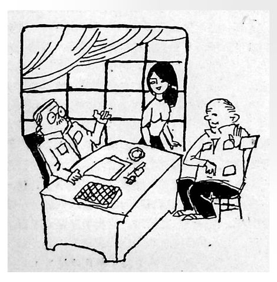
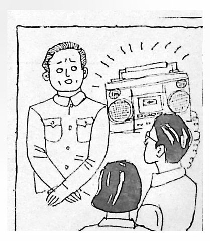
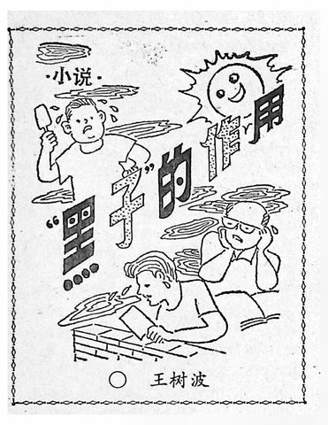
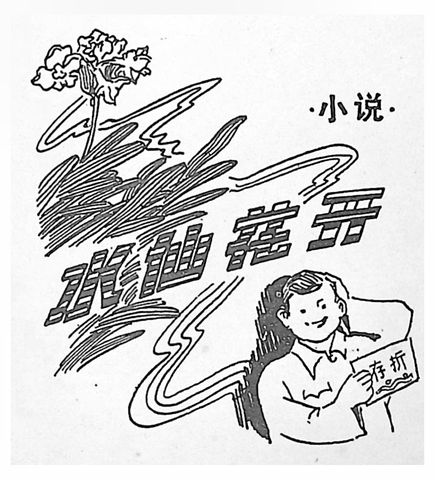
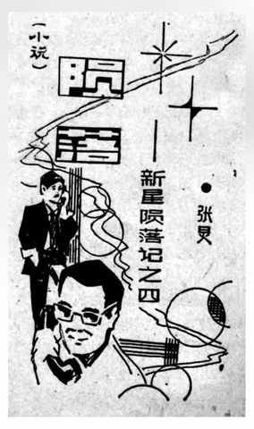

Story illustrations 27
-
 划圈（题图） · Drawing Circles (header illustration)
划圈（题图） · Drawing Circles (header illustration)
He Fei 和非. Renshi (Personnel), 1986 no. 6 (whole no. 9), p. 48. -
 划圈（插图） · Drawing Circles (inset illustration)
划圈（插图） · Drawing Circles (inset illustration)
He Fei 和非. Renshi (Personnel), 1986 no. 6 (whole no. 9), p. 48. -
 邪念恶行（题图） · Wicked Thoughts and Deeds (header illustration)
邪念恶行（题图） · Wicked Thoughts and Deeds (header illustration)
Unattributed. Renshi (Personnel), 1986 no. 7 (whole no. 10), p. 44. -
 负负得正（插图） · Two Negatives Make a Positive (illustration)
负负得正（插图） · Two Negatives Make a Positive (illustration)
He Fei 和非. Renshi (Personnel), 1987 no. 1 (whole no. 16), p. 48. -
 心绪（插图） · Agitation (illustration)
心绪（插图） · Agitation (illustration)
Unattributed. Renshi (Personnel), 1987 no. 2 (whole no. 17), p. 47. -
 机关干部超编及其改革（题图） · Overstaffing in Government Offices and Its Reform (header drawing)
机关干部超编及其改革（题图） · Overstaffing in Government Offices and Its Reform (header drawing)
Unattributed. Renshi (Personnel), 1987 no. 3 (whole no. 18), p. 27. -
 通知开会（题图） · Notice of a Meeting (header drawing)
通知开会（题图） · Notice of a Meeting (header drawing)
Unattributed. Renshi (Personnel), 1987 no. 6 (whole no. 21), p. 48. Reprinted from Zhongguo qingnian bao (China Youth Daily). -

通知开会（插图） · Notice of a Meeting (inset drawing)
Unattributed. Renshi (Personnel), 1987 no. 6 (whole no. 21), p. 48. Reprinted from Zhongguo qingnian bao (China Youth Daily). -
 为某君画像（插图） · Portrait of a Certain Gentleman (illustration)
为某君画像（插图） · Portrait of a Certain Gentleman (illustration)
Huang Yunzhong 黄允中. Renshi (Personnel), 1987 no. 7 (whole no. 22), p. 48. -
 梦试（题图） · A Test in a Dream (header drawing)
梦试（题图） · A Test in a Dream (header drawing)
Jia □ 贾□. Renshi (Personnel), 1987 no. 10 (whole no. 25), inside back cover. -

梦试（插图） · A Test in a Dream (inset drawing)
Jia □ 贾□. Renshi (Personnel), 1987 no. 10 (whole no. 25), inside back cover. -
 内线（讽刺诗画） · Inside Line (satirical poem drawing)
内线（讽刺诗画） · Inside Line (satirical poem drawing)
Drawn by Tang Shaoyi 唐少仪. Renshi (Personnel), 1987 no. 12 (whole no. 27), p. 39. -
 机关碰壁记（诗配画） · Running into a Wall at the Office (poem drawing)
机关碰壁记（诗配画） · Running into a Wall at the Office (poem drawing)
Drawn by Wang Chunsheng 王春生. Renshi (Personnel), 1988 no. 1 (whole no. 28), p. 29. -
 原来如此（题图） · So That's How It Is (title drawing)
原来如此（题图） · So That's How It Is (title drawing)
Unattributed. Renshi (Personnel), 1988 no. 2 (whole no. 29), p. 48. -
 圈（插图） · Circles (illustration)
圈（插图） · Circles (illustration)
Unattributed. Renshi (Personnel), 1988 no. 8 (whole no. 35), p. 48. -

“黑子”的作用（题图） · The Effect of “Sunspots” (title drawing)
Unattributed. Renshi (Personnel), 1988 no. 9 (whole no. 36), p. 48. -

水仙花开（题图） · The Narcissus Blooms (title drawing)
Unattributed. Renshi (Personnel), 1988 no. 9 (whole no. 36), inside back cover. -
 生活的小提琴（插图） · Life's Little Violin (illustration)
生活的小提琴（插图） · Life's Little Violin (illustration)
Unattributed. Renshi (Personnel), 1988 no. 10 (whole no. 37), p. 48. -
 补助（题图） · Allowances (title drawing)
补助（题图） · Allowances (title drawing)
Unattributed. Renshi (Personnel), 1988 no. 11 (whole no. 38), p. 39. -
 熬夜（题图） · Staying Up All Night (title illustration)
熬夜（题图） · Staying Up All Night (title illustration)
Unattributed. Renshi (Personnel), 1989 no. 9 (whole no. 48), p. 40. -

陨落（题图） · Falling (title illustration)
Unattributed. Renshi (Personnel), 1989 no. 11 (whole no. 50), p. 40. -
 杜甫告状（题图） · Du Fu Files a Complaint (title drawing)
杜甫告状（题图） · Du Fu Files a Complaint (title drawing)
Unattributed. Renshi (Personnel), 1990 no. 1 (whole no. 52), p. 38. -
 醒（题图） · Sobering Up (title illustration)
醒（题图） · Sobering Up (title illustration)
Unattributed. Renshi (Personnel), 1990 no. 2 (whole no. 53), p. 40. -
 紫砂壶（题图） · The Yixing Teapot (title illustration)
紫砂壶（题图） · The Yixing Teapot (title illustration)
Unattributed. Renshi (Personnel), 1990 no. 3 (whole no. 54), p. 40. -
 失算（插图） · A Miscalculation (illustration)
失算（插图） · A Miscalculation (illustration)
Unattributed. Renshi (Personnel), 1990 no. 5 (whole no. 56), p. 40. -
 孙猴儿不能提升（题图） · The Monkey Must Not Be Promoted (title drawing)
孙猴儿不能提升（题图） · The Monkey Must Not Be Promoted (title drawing)
Unattributed. Renshi (Personnel), 1990 no. 8 (whole no. 59), p. 40. -
 造假学院招生简章（题图） · Admissions Prospectus of the College of Forgery (header drawing)
造假学院招生简章（题图） · Admissions Prospectus of the College of Forgery (header drawing)
Unattributed. Renshi (Personnel), 1990 no. 11 (whole no. 62), p. 40.